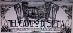

|
 |
2 luglio 1919
LEOCORNO
|
L'ordine è quello di entrata fra i canapi e il grassetto indica la vincitrice
In questo colore le contrade estratte a sorte
Cliccando sui nomi dei cavalli, su quelli dei fantini e sulle immagini, si apriranno le relative pagine
(Abbreviazioni: B=baio; G=grigio; I=isabella; M=morello; R=roano; S=sauro)
* Fantino esordiente
MOSSIERE: Venturino Benvenuti 


Priore: Virgilio Grassi
Capitano: Giovanni Tarquini
La contrada non vinceva dal 17 aprile 1904
Primo Palio vinto da Cispa

Dopo cinque anni di guerra torna la terra in piazza, in un clima di grande attesa. La tratta favorisce la Torre con Stellina, la Chiocciola con Scodata e l'Aquila con un veloce baio del cavallaio Cambi.
Le tre favorite fissano subito con i rispettivi fantini, mentre nelle altre contrade ci sono movimenti molto intensi che si concretizzano nella quarta prova. Bubbolo corre due prove nel Drago, una nella Tartuca e corre il Palio nella Selva. Rombois inizia nella Selva per poi passare al Drago e correre il Palio nella Tartuca. Fulmine corre due prove nella Tartuca, una nella Selva ed il Palio con la Lupa che cede Cispa al Leocorno.
Nella Giraffa inizia Zaraballe, poi Pioviscola vince la concorrenza di Carlo Magnelli. Al termine del Corteo Storico viene effettuata per la prima volta la sbandierata collettiva, detta "della vittoria".
Il Palio ha la sua svolta nell'immediata vigilia della carriera. Nappa avvicina Randellone e gli riferisce la sua intenzione di gettare in terra Picino, con il quale esistono dei contrasti per questioni di donne.
Il fantino dell'Aquila è sicuro che lui e Picino partiranno primi dalla mossa e dice a Randellone di tenersi a debita distanza per sfruttare al meglio la situazione che verrà a crearsi.
Le previsioni di Nappa si rivelano esatte, Aquila e Chiocciola partono prime, insieme al Montone, la Torre resta indietro, anche per l'ostacolo subito dalla Lupa. A San Martino, con un traiettoria interna, Picino prende la testa seguito da Nappa, intanto la Torre si è portata in terza posizione.
Nappa è sempre intenzionato a far perdere il Palio a Picino ed al Casato mette in atto il suo piano. Il fantino aquilino taglia la strada alla Chiocciola e cade sbattendo nei palchi, Picino è sbilanciato e finisce anch'egli sul tufo.
Arriva Randellone, che preso dalla foga, sbatte nel cavallo della Chiocciola e cade, in un sol colpo le tre favorite escono di scena ed inizia il Palio delle "brenne".

|
| |
Dopo il capitombolo al Casato prende la testa la Selva, ma al secondo San Martino passa in testa la Lupa con Fulmine che nerba Bubbolo, nel frattempo recuperano terreno Leocorno e Tartuca.
All'inizio del terzo giro il Leocorno e la Tartuca passano la Lupa. Cispa spinge Giacca con grande sicurezza, acquisisce un discreto vantaggio e porta la vittoria nel Leocorno, nonostante il generoso tentativo di recupero di Rombois nella Tartuca.
(Da "Daccelo!" di Roberto Filiani)
|





|
|